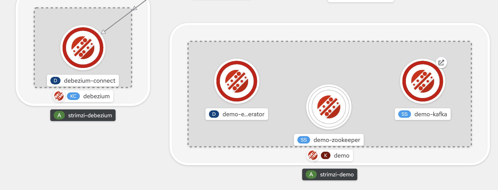

Troubleshooting
Troubleshooting Kafka
Cluster fails to startup after OCP cluster restart
Sometimes with publically exposed kafka cluster (using OCP routes) the cluster gets stuck due to some race condition with the Route resource being reported. The operator then gets into a state that prevents it from healing the Kafka cluster.
From the Topology View of your cluster, it might look like this:

To remedy, you can try running this command:
oc get pods -n openshift-operators -oname | grep amq-streams-cluster-operator | xargs oc delete -n openshift-operatorsTroubleshooting Kafka Connect
Change events not coming from the connector
-
Check to see if there are any events on the topic as outlined here
-
If no events are found, check the connector status
oc exec -it deploy/debezium-connect -n ${KAFKA_PROJECT} -- curl http://localhost:8083/connectors/debezium-connector/status -
You should see output like this:
{"name":"debezium-connector","connector":{"state":"RUNNING","worker_id":"10.131.0.215:8083"},"tasks":[{"id":0,"state":"RUNNING","worker_id":"10.131.0.215:8083"}],"type":"source"} -
Attempt to restart the connector task
oc exec -it deploy/debezium-connect -n ${KAFKA_PROJECT} -- curl -X POST http://localhost:8083/connectors/debezium-connector/tasks/0/restart
Debezium fails to connect to database
Symptom: You will see the following in the Kakfa connect logs
2021-03-04 04:05:55,115 WARN No whitelisted table has enabled CDC, whitelisted table list does not contain any table with CDC enabled or no table match the white/blacklist filter(s) (io.debezium.connector.sqlserver.SqlServerStreamingChangeEventSource) [debezium-sqlserverconnector-mssql-server-linux-change-event-source-coordinator]This has been fixed by:
-
Deleting and recreating the database
-
Deleting the connect pod
-
NOTE: Whilst the database is deleted and recreated, the connection appears to die and it doesn’t restart itself😞
-